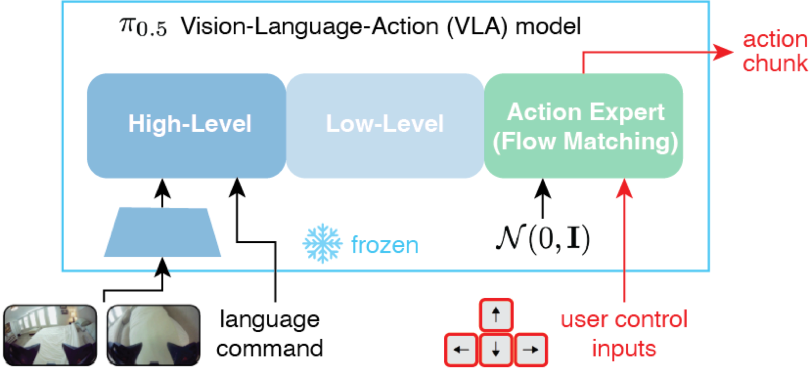
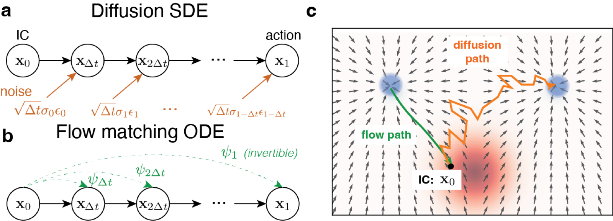
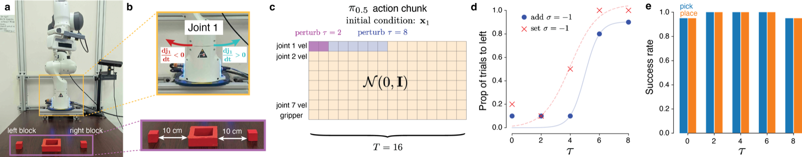
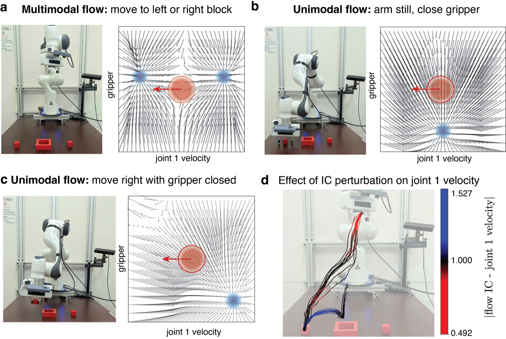
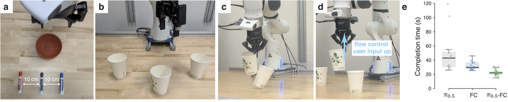

Steering Vision–Language–Action Models with Simple Real-Time Inputs
Left: Autonomous zero-shot π0.5-DROID makes errors when stacking the cups (shown at 4× speed). Right: With flow control, users give arrow key inputs in real-time that help steer zero-shot π0.5-DROID to successfully stack the cups (real time, 1×). Flow control can be used out-of-the-box (no model fine tuning) with any VLAs using a flow matching head.
Flow control steers a vision-language-action (VLA) model in real time using generic inputs, such as a keyboard. It works out-of-the-box on a frozen policy, without any retraining or fine-tuning. The VLA turns crude user input (like key presses) into an action sampled from the expert action distribution it learned during training, so the resulting motion stays high quality while reflecting user intent.
We freeze a VLA (here, π0.5) with a flow-matching action expert and inject the user's input into the flow's initial condition. Because flow matching is a deterministic and invertible ODE, we reason that information about the IC persists in the generated action.


On an ambiguous two-block task (“put the block in the hole”), π0.5 autonomously picks the right block 85% of the time. Setting joint 1's initial condition redirects it to the left block 100% of the time, without degrading pick-and-place success. We later demonstrate flow control on all joints using more complex tasks.

When the action distribution is multimodal (which block to grab), the input selects the mode the user wants. When the task is unambiguous, the flow-matching head absorbs even discordant inputs into on-policy actions. In this way, steering never breaks the underlying skill. What if the user wanted to do something discordant with a unimodal action distribution? See our Appendix C.

In a study with 16 participants, keyboard steering lifts Marker-in-Bowl success from 53.3% → 99.4% (correcting the VLA's language-following errors) and Cup-Stacking from 48.0% → 87.7%, while cutting cup-stacking time 30% (50.3 s → 35.2 s).

Because flow-control trajectories are on-policy, they are clean training data. Fine-tuning on 60 successful flow-control trials (π0.5-FC) raises autonomous cup-stacking from 48% → 100% and drops mean completion time to ~22 s.
@misc{kao2026flowcontrol,
title = {Flow Control: Steering Vision-Language-Action Models
with Simple Real-Time Inputs},
author = {Kao, Jonathan C. and Chan, Jason and Wang, Andy},
year = {2026},
eprint = {2606.10180},
archivePrefix = {arXiv},
primaryClass = {cs.RO},
url = {https://arxiv.org/abs/2606.10180}
}